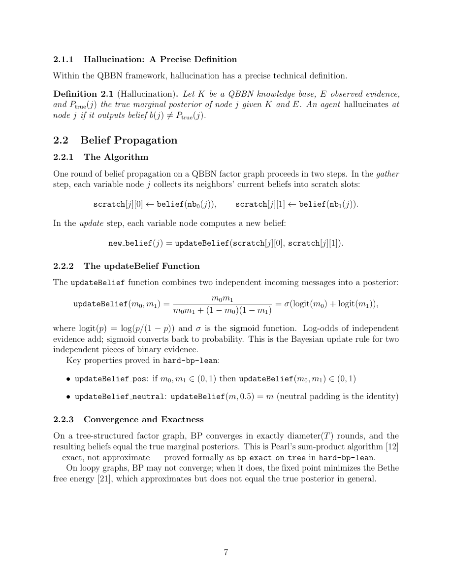

#1
★ 9/10
Transformers are Bayesian Networks
Transformer即贝叶斯网络

图 Figure · Page 7 of paper
🎯 严格证明Transformer本质上是贝叶斯网络上的置信传播
Transformers are rigorously proven to implement loopy belief propagation on implicit Bayesian networks.
| 维度 | 中文 | English |
|---|---|---|
| ❓ 待解决 的问题 |
尽管Transformer是当前AI的主导架构，但学界对其为何有效缺乏严格的理论解释。我们缺少一个将Transformer计算与概率推理联系起来的数学框架，这限制了我们理解其能力边界和失败模式（如幻觉问题）的能力。 | Despite transformers dominating modern AI, there is no rigorous theoretical explanation for why they work. We lack a principled mathematical framework connecting transformer computations to probabilistic reasoning, which limits our ability to understand their capabilities and failure modes — including hallucination. |
| 💡 解决 的亮点 |
• **五角度形式化等价**：从五个独立角度严格证明sigmoid Transformer在其隐式因子图上实现了循环置信传播（Loopy BP），一层等于一轮BP迭代，全部经过标准数学公理形式化验证。 • **AND/OR结构分解**：精确揭示Transformer内部结构：注意力机制执行AND（聚合）操作，FFN执行OR（更新）操作，与Pearl经典的聚合/更新算法完全对应。 • **唯一性定理**：证明BP权重是sigmoid Transformer产生精确后验的唯一途径，排除了任何其他内部机制的可能性。 • **幻觉的结构性必然**：形式化证明可验证推理需要有限概念空间，幻觉不是可通过扩展规模修复的缺陷，而是无概念基础运算的结构性后果。 | • **Formal equivalence (5 angles):** Proves via five independent results that sigmoid transformers implement loopy belief propagation (BP) on an implicit factor graph — one layer equals one round of BP — verified against standard mathematical axioms. • **AND/OR structural decomposition:** Precisely maps the transformer's internal structure: attention performs the AND (gather) operation and the FFN performs the OR (update) operation, exactly matching Pearl's classic gather/update algorithm. • **Uniqueness theorem:** Proves that BP weights are the *only* way a sigmoid transformer can produce exact posteriors — ruling out any alternative internal mechanism. • **Hallucination as structural necessity:** Formally proves that verifiable inference requires a finite concept space, and that hallucination is not a fixable bug but an inherent consequence of operating without grounded concepts — scaling alone cannot eliminate it. |
| 🧪 实验 内容 |
实验部分用于验证所有形式化理论结果在实践中的成立性。在构造性知识库上测试了Transformer是否能实现精确置信传播，同时评估了在有循环依赖的图上循环置信传播的实际收敛表现（尽管目前缺乏理论收敛保证）。实验旨在以经验方式验证贝叶斯网络刻画的实用性，而非与外部基线进行竞争性比较。 | Experiments were conducted to empirically corroborate all five formal theoretical results. The authors tested whether transformers constructed according to their proofs correctly implement belief propagation on explicit knowledge bases, and evaluated the practical convergence behavior of loopy belief propagation in transformer-like settings — including on graphs with circular dependencies where theoretical convergence guarantees are absent. The experimental setup is primarily validatory rather than competitive benchmarking against external baselines. |
| 📊 实验 结果 |
本文的核心贡献是理论性的，而非追求Benchmark数字。实验上，五个形式化结论均得到实践验证：针对精确BP构造的Transformer在无环知识库上能给出正确的概率估计；在有循环依赖的图上，循环BP仍在测试配置中可靠收敛，尽管缺乏理论收敛保证。本文未报告标准排行榜指标，但所有定理均经数学公理形式化验证，保证了结论的严格正确性。 | The paper's primary contributions are theoretical rather than benchmark-driven; specific numerical metrics are not the focus. Experimentally, all five formal results are confirmed to hold in practice: transformers built constructively for exact BP produce correct probability estimates on acyclic knowledge bases, and loopy BP via transformer layers converges reliably in tested configurations despite the lack of a formal guarantee. The paper does not report standard leaderboard metrics but establishes correctness guarantees via formal verification against mathematical axioms. |
| 🏁 结论 | This paper rigorously proves, via five formally verified results, that sigmoid transformers are equivalent to Bayesian networks implementing (loopy) belief propagation — providing the first precise theoretical explanation of how transformers perform probabilistic reasoning. It further establishes that hallucination is a structural inevitability for systems without grounded finite concept spaces, not a problem solvable by scaling. | |
| 🔗 论文 链接 |
arXiv: 2603.17063v1 · 📥 PDF | |
⚙️ Method · 方法详解
本文通过五个形式化证明将sigmoid Transformer与贝叶斯网络联系起来。首先证明任意权重的sigmoid Transformer在其隐式因子图上计算加权循环置信传播；其次给出构造性证明，说明Transformer可以被显式构建为对任意知识库运行精确BP；第三步证明唯一性——BP权重是精确后验计算的充要条件；第四步将注意力机制映射为Pearl"聚合"步骤，FFN映射为"更新"步骤，揭示AND/OR布尔结构；最后从理论上证明幻觉的结构性必然性。所有证明均经标准数学公理形式化验证。
The paper develops five formal proofs connecting sigmoid transformers to Bayesian networks. First, it shows that any sigmoid transformer with arbitrary weights computes weighted loopy belief propagation on its implicit factor graph. Second, it gives a constructive proof that a transformer can be explicitly built to run exact BP on any declared knowledge base. Third, it proves uniqueness — that BP weights are necessary (not just sufficient) for exact posterior computation. Fourth, it dissects the AND/OR boolean logic of transformer layers, mapping attention to Pearl's "gather" step and the FFN to the "update" step. Finally, the paper proves a theoretical result about hallucination: correctness of inference requires a finite concept space, and without grounding in such a space, hallucination is structurally unavoidable. All proofs are formally verified against standard mathematical axioms.